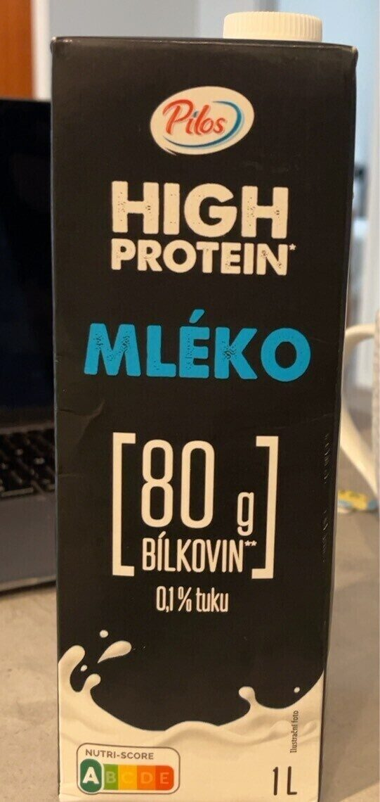
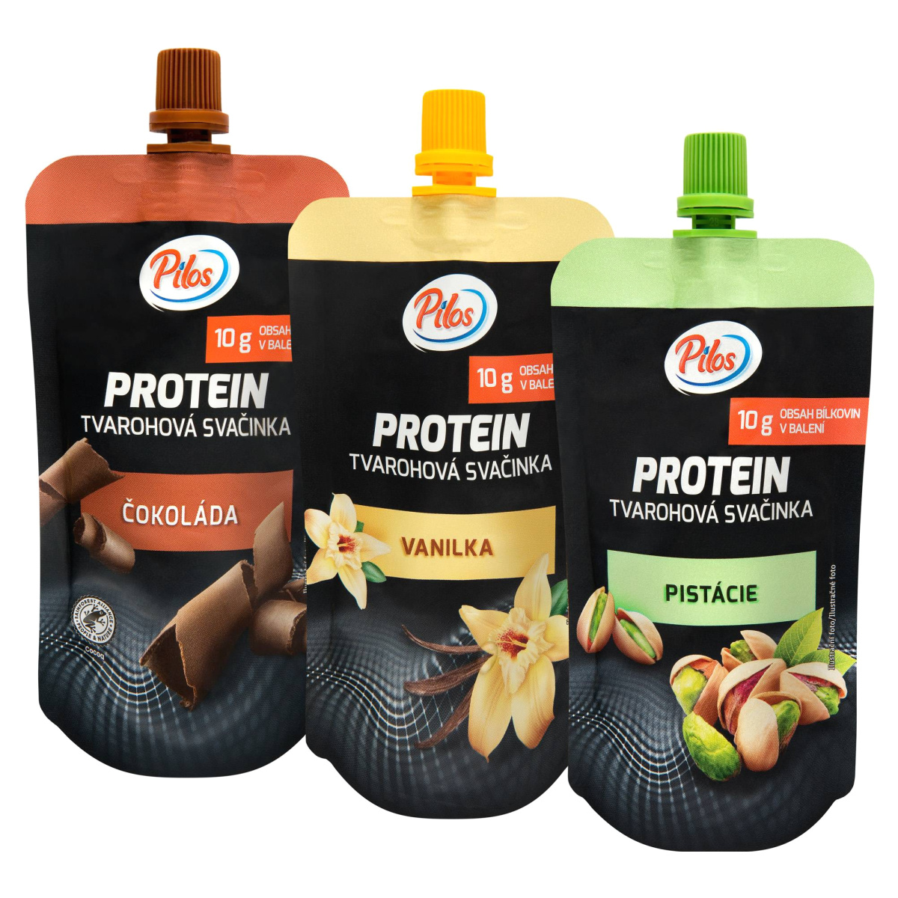
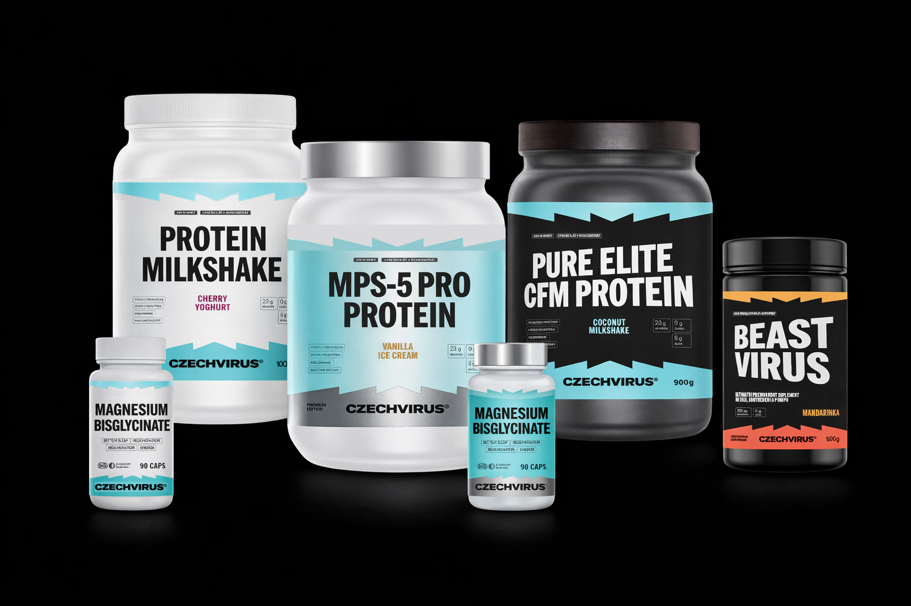

Souhrn stěžejních poznatků od interního týmu
pro Steezy k zapracování do dalšího kola návrhů
Směr OK. Zuby symetricky všude. Řady odlišit barvou etiket — Essential bílá, Premium stříbrná, Performance černá+červená. Bez příchutě = tyrkysová. Performance pozadí s patternem virusáka. Greens vyšperkovat custom.
V 2D OK, ale po tisku působí lacině. Šikmý text neevokuje premium. 2 z 5 lidí v posilovně to přirovnali k Lidl Pilos etiketám. Ale třeba jen pomůžou gradienty, patterny, parciální lak.
Lépe rozlišit řady — barvou etiket, ne butelek. Barvy jen pro příchutě, ne produkty. Symetrické zuby u Performance. Zvážit, zda rozšířený název nutný — raději signature červená.
Symetrické zuby, sjednocené pozice prvků (logo, příchuť, hodnoty). Barvy dle řad (modrá/stříbrná/zlatá). Šikmý text čím dál méně sedí. Avatar super, ale ne oči na butelky (Vilgain).
Barvy příliš přehnané. Bílé butelky zaujaly víc. Zuby dobrý nápad, logo top. Zarovnání na střed. Čím déle se dívám, tím míň se líbí — ale vnímá to jako draft.
Online prezentace neoslnila, naživo lepší. Patrikova vize (bílá + tyrkys) je top. Greens etikety super. Virusák = spíš padouch, ale na plakátech funguje. Směr je správný.
Rovné, nešikmé zuby konzistentně na všech produktech a řadách. Žádné výjimky u Performance.
Sjednocená pozice loga, názvu příchutě a nutričních hodnot — stejně na všech řadách.
Barva etikety/pozadí odliší řadu, ne produkt. Příchutě rozlišit barvou - možná jen text? Možná zuby?
Soft a přívětivý dojem pro nejširší cílovku. Černá jen u Performance.
Po tisku není úplně premium dojem. Patterny? Gradienty? Možná to vyřeší lesklé písmo.
Ujíždějící název u Performance řady někomu vadí (Roman, Milan), někomu ne (Patrik). Šikmé zuby ale vadí všem — ty sjednotit.
Roman se ptal 5 náhodných lidí v posilovně — 2 z nich nezávisle přirovnali etikety k Pilos Protein řadě z Lidlu.


Řady bychom měli rozdělit méně násilně — s ohledem na produkty, které do nich spadají, i na to, jak reálně fungujeme (víme, že na proteiny butelky změníme v pohodě, na vitamíny už bez šance, protože černé víčko dělá jen NL dodavatel).
A Greens — nástřel je good, z podstaty produktu se nebát ho custom vyšperkovat. Klidně přidat nějaký vlastní prvek, zbytek brand codes (zuby, logo) zůstane stejný, takže to nebude vypadat jako produkt od jiné značky.

Rovné zuby na všech produktech. Logo, název příchutě a nutriční info vždy na stejné pozici. Šikmý text u Performance? Můžem prosím zkusit obě varianty?
Barvy rozlišují řadu (Essential/Premium/Performance), ne jednotlivé produkty. S barvou si hrát pouze při příchuti - možná jen textem, možná zuby.
Světlé etikety pro Essential. Tyrkysová jako signature barva pro produkty bez příchutě. Stříbrná pro Premium tier.
S tiskem asi nic neuděláme, ale možné zapracování Patrikoveho návrhu tohle vyřeší.
SuperGreens má potenciál na custom vizuál — všem se líbí. Zachovat brand codes, ale vyšperkovat specificky.
Do černého pozadí Performance řady přidat opakující se vzor virusáka nebo jinou texturu. Podpoří premium a HC dojem.